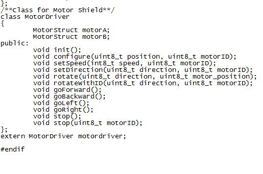

The Motor Shield is a perfect platform for robotics and mechanical applications. It enables the Arduino to drive two brushed DC motors or one 4-wire two-phase stepper motor. Based on the H-bridge driver Chip L298N motor driver integrated circuit, it requires a 6V to 15V power supply to power the motor and also includes an on-board 5V voltage regulator for powering the main Arduino board. Additional plug and play Grove sensors can be connected to the 13 on-board Grove connectors.
Model: SLD80256P
CAUTION:
The Driver IC and Heat sink may become very hot when working with current more than 1000mA.
| Item | Min | Typical | Max | Unit |
|---|---|---|---|---|
| Logic Control Voltage | 4.5 | 5 | 5.5 | V |
| Motor Supply Voltage | 6 | / | 15 | V |
| Output Voltage | 0 | / | Vinput -1 | V |
| Output Current( For Each Channel) | / | / | 2000 * | mA |
| Output Duty range | 0%~100% | / | ||
| Dimension | 68.5x54.5x29.5 | mm | ||
| Net Weight | 37 | g | ||
* Recommend maximum duty <50% at full load
External Power Jack: External Power supply for Motor Shield.
Motor Interface:Out 1 and Out 2(Out 3 and Out 4) can connect Motor A(B) for DC Motor.
Enable Motor A Connector:Connect above two interfaces with a jumper cap when driving the DC motor A.
Enable Motor B Connector:Connect below two interfaces with a jumper cap when driving the DC motor B.
Supply Power Select Connector: USB/Extern Power can supply for driving the Motor. When connect the connector using a jumper cap, the USB power for the motor shieled.
The following table describes Motor A/B indicator LEDs.
| Indicators | Description |
|---|---|
| IN1_red | lights when motor A turns clockwise, out1 pin outputs high level |
| IN2_green | lights when motor A turns counterclockwise, out2 pin outputs high level |
| IN3_red | lights when motor B turns clockwise, out3 pin outputs high level |
| IN4_green | lights when motor B turns counterclockwise, out4 pin outputs high level |
| Pin Name | Direction | Connection to Arduino | Description |
|---|---|---|---|
| VCC | / | VCC | Power supply selector |
| VS, GND | / | / | Power Supply for Motor, 6V - 15V |
| EA | Input | D9 | TTL Compatible Enable Input of Bridge A |
| EB | Input | D10 | TTL Compatible Enable Input of Bridge B |
| IN1 | Input | D8 | TTL Compatible Inputs of the Bridge A |
| IN2 | Input | D11 | TTL Compatible Inputs of the Bridge A |
| IN3 | Input | D12 | TTL Compatible Inputs of the Bridge B |
| IN4 | Input | D13 | TTL Compatible Inputs of the Bridge B |
| M1-, M1+ | Output | / | Outputs of the Bridge A |
| M2-, M2+ | Output | / | Outputs of the Bridge B |
Connect DC motor to the motor shield Output Pins M1+& M1-(M2+& M2-), if using a 4-wire stepper motor, make sure the 4 Pins are correctly connected. Connect the drive voltage (The required voltage depends upon the motor used. Refer to the motor datasheet) to the Power supply terminals.
With the jumper J4 inserted, Arduino can be powered by the drive voltage via an on-board voltage regulator, which regulates the drive voltage to 5v.
Download the Motor shield Demo code and open the Motor_shield_demo_code sketch. Select the corresponding Arduino board in tools-boards and serial port in tools-serial port.
Upload the sketch to your arduino board, then you would found the 2 motors begin to work. If you power the motor shield via the power terminal and the power jumper J4 was inserted, you can remove the USB cable now.
Speed control is achieved through conventional PWM which can be obtained from Arduino's PWM output D9(EA) and D10(EB). Using the function analogWrite() to generate the drive PWM:
int speedpinA=9;//enable motor A
int speedpinB=10;//enable motor B
int speed =127;//define the speed of motor
......
analogWrite(speedpinA,speed);//AnalogWrite to Generate PWM to control the motor speed
analogWrite(speedpinB,speed);
And Set the Digital D8(IN1) and D11(IN2) to control the motor attached to OUT1/2, while digital D12(IN3) and D13(IN4) to control motor attached to OUT3/4.
int pinI1=8;//define I1 interface
int pinI2=11;//define I2 interface
......
digitalWrite(pinI2,HIGH);//turn DC Motor A move clockwise
digitalWrite(pinI1,LOW);
Follows the logic between EA(B) and INx with motor motion:
| EA(B) | IN1(IN3) | IN2(IN4) | Motion of MotorA(B) |
|---|---|---|---|
| 0 | x | x | Stop |
| 1 | 0 | 0 | Stop |
| 1 | 0 | 1 | Clockwise |
| 1 | 1 | 0 | Anticlockwise |
| 1 | 1 | 1 | Stop |
/*
SEEED Studio Stepper Motor Control - one revolution
Adapts the Stepper example for use with the SEEED STUDIO motor shield.
This program drives a unipolar or bipolar stepper motor
by using the included Stepper library of the Arduino.
The motor is attached to the Seeed Studio motor shield and an Arduino.
The digital pins 8,11,12,13 drive the L298N and are used when creating the stepper object
Digital pins 9 and 10 must be high to enable the chip.
The motor should revolves one revolution in one direction, then
one revolution in the other direction.
Created 11 Mar. 2007
Modified 30 Nov. 2009
by Tom Igoe
Modified 4 July 2012
By R. Dumouchelle
*/
#include <Stepper.h>
const int stepsPerRevolution = 200; // change this to fit the number of steps per revolution
// for your motor
// initialize the stepper library on pins 8 through 11:
Stepper myStepper(stepsPerRevolution, 8,11,12,13);
void setup() {
// set the speed at 60 rpm:
myStepper.setSpeed(60);
// initialize the serial port:
Serial.begin(9600);
pinMode(9,OUTPUT);
pinMode(10,OUTPUT);
digitalWrite(9,HIGH);
digitalWrite(10,HIGH);
}
void loop() {
// step one revolution in one direction:
Serial.println("clockwise");
myStepper.step(stepsPerRevolution);
delay(500);
step one revolution in the other direction:
Serial.println("counterclockwise");
myStepper.step(-stepsPerRevolution);
delay(500);
}
| Revision | Descriptions | Release |
|---|---|---|
| v1.0 | V1.0 Release | 2012/3/29 |

This is a recipe about how to control motors individually with the Seeedstudio 2.0 motor shield.
Copyright (c) 2008-2016 Seeed Development Limited (www.seeedstudio.com / www.seeed.cc)